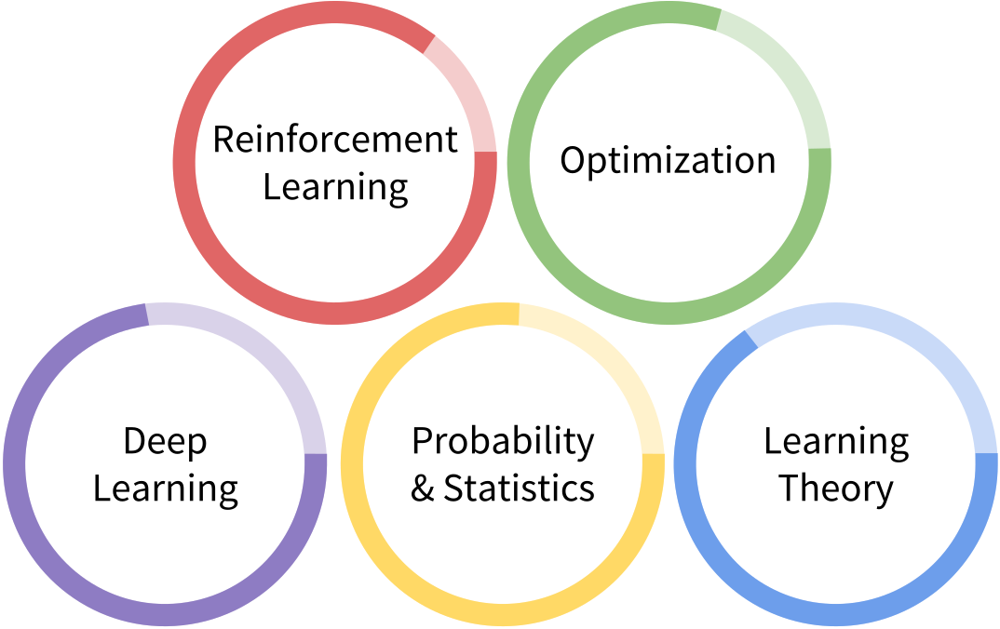

Craig Corcoran
I'm a machine learning PhD student transitioning to industry. I'm passionate
about designing new ways to improve lives through machine learning. My work in
robotics, reinforcement learning, and hypothesis testing has given me the
technical and software skills necessary to utilize data for a wide variety of
applications, both at scale and in smaller exploratory settings.
Skills
Machine Learning

Software

Experience & Education
UT Austin Computer Science PhD Program (all but dissertation)
(2010 – Present)
Research:
Explored Representation Discovery for Reinforcement Learning with
Peter Stone,
Continuous-action Contextual Bandits with
Pradeep Ravikumar,
and Adaptive Hypothesis Testing with
Constantine Caramanis
Teaching:
Prepared programming assignments, held discussion sections, and gave lectures as a TA for Large Scale Machine Learning, Convex Optimization, Artificial Intelligence, and iOS Mobile Development
Courses:
Studied Reinforcement Learning, Graphical Models, Probabilistic Algorithms, Numerical Linear Algebra, Data Mining, Machine Learning
Other:
Recieved NSF Fellowship; Co-Founded
Deep Learning Reading Group
IBM T. J. Watson Research Center Internship
(Summer 2013)
Developed methods for using satellite images to predict weather and its impact on solar energy markets with
Gerry Tesauro
NASA Dexterous Robotics Lab Internship, JSC
(2008 – 2009)
Researched particle filter methods for localizing in-hand objects using touch sensor data from Robonaut 2 with Rob Platt
Rice University
(2005 – 2010)
B.A. in Mechanical Engineering and Cognitive Science with honors